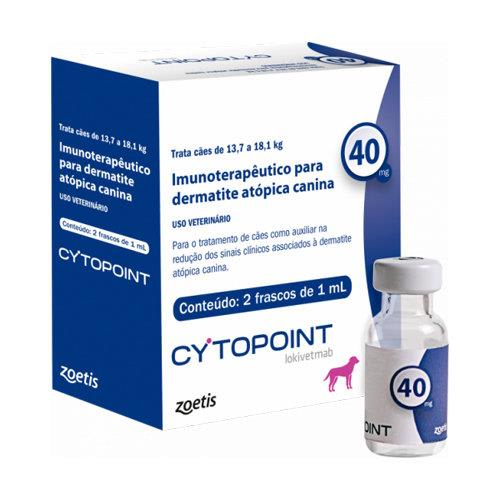

monoclonal antibody injectable therapy for the treatment of dogs against allergic dermatitis and atopic dermatitis. It provides 4 to 8 weeks of allergic pruritus relief with a single in-office injection
Canine
Lokivetmab
Injection
10mg, 20mg, 30mg, 40mg
2 vial/box
For dogs with allergic dermatitis and atopic dermatitis, Cytopoint® offers 4 to 8 weeks of relief with a single in-office injection.
Repeat administration every 4 to 8 weeks as needed in individual patients.
Cytopoint was proven to work fast and last in dogs with allergic pruritus
87.8% of dogs achieved treatment success with a single injection of Cytopoint
93% of large/giant dogs (≥48.7 lb) were treatment successes
*STUDY DESIGN: This study was an independent, real-world, retrospective analysis of medical records of dogs with allergic dermatitis treated with Cytopoint from November 2015 to October 2016. Treatment success for owner-assessed pruritus was empirically defined as a ≥2 cm reduction in pruritus visual analog scale (PVAS) from baseline. The 135 dogs in this study included 80 with atopic dermatitis (7 seasonal, 73 nonseasonal), 10 with concurrent food allergy and atopic dermatitis, 45 with allergic dermatitis of undetermined cause, 3 lost to follow-up and 0 flea-allergic dogs. This study was completed at Colorado State University in Fort Collins, Colorado.
Cytopoint is the first and only monoclonal caninized antibody (mAb) treatment for dogs that specifically targets and neutralizes canine IL-31, with minimal impact on normal immune functions
Cytopoint was shown to be safe and effective in an independent, real-world study of dogs diagnosed with allergic dermatitis